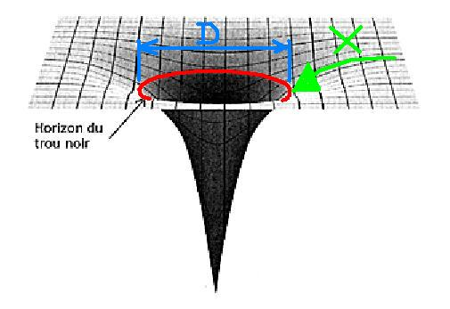

C'est quoi un trou noir ?
Un trou noir est une région de l'espace où la gravité est si intense que rien, pas même la lumière,
ne peut s'en échapper.La gravité d'un trou noir est si forte que tout ce qui s'approche trop près
est aspiré à l'intérieur et disparaît. C'est comme un piège spatial extrêmement puissant. Les trous
noirs peuvent être très petits ou très grands, en fonction de la quantité de matière qu'ils contiennent.
Ils sont invisibles, car ils ne laissent pas la lumière s'échapper, mais les scientifiques peuvent les7
détecter en observant les effets qu'ils ont sur les objets autour d'eux.
Que se passe-t-il si on traverse un trou noir ?
Je sais que tout le monde attend cette question, mais je dois vous prévenir que cela peut être décevant, vous allez voir.
Juste pour donner une idée, un trou noir peut être extrêmement immense. Le plus grand trou noir connu est
appelé M87*, et il a un diamètre d'environ 40 milliards de kilomètres. Sa masse est équivalente à environ 6,5
milliards de fois celle du Soleil. Pour vous donner une comparaison, cela équivaut à environ 2 164 500 000 000 000
(2,1645 quadrillions) de fois la masse de la Terre
,En kg M87* vaut 1 298 850 000 000 000 000 000 000 000 kg . C'est comme si vous aviez 1,5 milliard de
milliards de planètes Terre réunies (Ca vaux 2 Ekhay) .
Pour atteindre un trou noir, c'est déjà une sacrée route, très très longue !(Pas d'excuse pour pas lire One Piece).Le trou noir le plus proche de nous
se situe à environ 1 600 années-lumière de la Terre. Il se trouve dans la constellation du Microscope et porte
le nom de A0620-00.Mais bon, disons qu'on utilise le Faucon Millenium et pouf, on se retrouve devant le trou noir.
Que se passerait-il ?
(Beaucoup de texte pour final meme pas repondre la question hahaha)
En approchant d'un trou noir, la gravité devient de plus en plus forte, provoquant un phénomène appelé la
distorsion du temps. Cela signifie que le temps s'écoule plus lentement près du trou noir par rapport à un
observateur éloigné.Pour ceux qui n'ont pas encore compris, imaginez que vous vous approchiez d'un trou noir
pendant que votre ami se trouve à bord d'un vaisseau spatial. Votre ami vous observerait vous déplacer très
lentement alors que, de votre point de vue, vous vous déplacez à une vitesse normale,c'est fascinant.
Lorsqu'on atteint le point de non-retour appelé horizon des événements, il est généralement supposé que
l'on ne peut plus revenir en arrière.S'approcher d'un trou noir peut faire s'étirer notre corps en raison de
la force de gravité intense qui le tire vers le trou noir. Cela peut provoquer un étirement visible de notreµ
corps dans la direction du trou noir. Ces forces de gravité puissantes sont responsables de cet effet
d'allongement. Une fois franchi cet horizon,l'objet ou la personne serait irrémédiablement absorbé par le trou noir.

Et après, on ne sait pas...
Certains parlent de la possibilité de voyager dans d'autres univers, le multivers, mais ce ne sont que des théories.